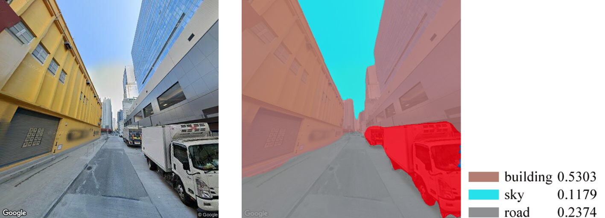

HONG KONG
基于 视觉复杂度 的 香港"城市街景索引"
通过在线街景来探索城市形象已不是什么新鲜事儿了，谷歌街景、百度街景等地图应用便可以实现足不出户地轻松浏览世界各地。
如今，社会的信息数字化发展已进入快车道，人们对城市形象探索有了更高的需求，例如，快速搜索特定街景、智能交互城市环境，明智决策规划发展。
然而，现有的在线街景应用却无法摆脱线性单一的探索模式，人们只能被限制在虚拟的街道上单向点击前进，无法对城市形象进行多样化的交互探索体验。
因此，我们开发了一个“城市街景索引”应用，通过收集、分析和描述整个城市街景的视觉信息数据流，以达到灵活、多维度、高效地深入挖掘城市视觉环境特征的目的，从而改变现代城市形象的管理与探索的方式。
街景的数字信息化需要对街景进行视觉特征的提取与量化。对此，我们着眼于街景的纹理、形状、色彩这三个基于感知的视觉特征，并以视觉复杂度的方式去量化。这样做的原因有三：
1. 凯文林奇在《城市意象》中提出，沿街的砖墙老屋、门前的热闹集市、街边的葱郁大树等，这些具有不同纹理、形状、色彩与组合模式的视觉肌理，往往会形成生动、强烈的心理图像， 是强化城市意象性(imageability)与易辨性(legibility)的感知方式。因此，纹理、形状、色彩是认识城市意象、印象、风貌形象的典型视觉特征。
2. 在以往对城市街景与人类认知的耦合研究中，不难发现“视觉复杂度”可被看作是街景多种认知体验的底层逻辑与描述机制。因此，视觉复杂度是视觉信息传递中数量与能量的有效量化方式。


3.目前，数字语境下的街景解析通常依靠语义分割认知，即提取街景的天空、建筑、植物、道路等物质构成特征，并以其各自的像素占比来量化。但这种方法只能描述街景的“形态”，却并不能抓住街景的“神韵”。因此，街景纹理、形状、色彩特征的视觉复杂度“另辟蹊径”，为城市形象认知提供了一个新颖的探索角度。同时，也可作为现有方法的有效补充，在数字语境下更全面的掌握城市街景形象。

文字
街景的数字信息化需要对街景进行视觉特征的提取与量化。对此，我们着眼于街景的纹理、形状、色彩这三个基于感知的视觉特征，并以视觉复杂度的方式去量化。这样做的原因有三：
1. 凯文林奇在《城市意象》中提出，沿街的砖墙老屋、门前的热闹集市、街边的葱郁大树等，这些具有不同纹理、形状、色彩与组合模式的视觉肌理，往往会形成生动、强烈的心理图像， 是强化城市意象性(imageability)与易辨性(legibility)的感知方式。因此，纹理、形状、色彩是认识城市意象、印象、风貌形象的典型视觉特征。
2. 在以往对城市街景与人类认知的耦合研究中，不难发现“视觉复杂度”可被看作是街景多种认知体验的底层逻辑与描述机制。因此，视觉复杂度是视觉信息传递中数量与能量的有效量化方式。
“安全性”由低到高的街景（图片来源：[1]）
“视觉质量”感知由低到高的街景（图片来源：[2]）
“美观性”感知由低到高的街景（图片来源：[3]）
“疗愈性”感知由低到高的街景（图片来源：[4]）
3.目前，数字语境下的街景解析通常依靠语义分割认知，即提取街景的天空、建筑、植物、道路等物质构成特征，并以其各自的像素占比来量化。但这种方法只能描述街景的“形态”，却并不能抓住街景的“神韵”。因此，街景纹理、形状、色彩特征的视觉复杂度“另辟蹊径”，为城市形象认知提供了一个新颖的探索角度。同时，也可作为现有方法的有效补充，在数字语境下更全面的掌握城市街景形象。

物质构成相似的街景却有着完全不同的视觉感受
文字
纹理 Texture：
tips
低
高
形状 Shape：
tips
低
高
色彩 Color：
tips
低
高
DEFAULT
Find Geo-location